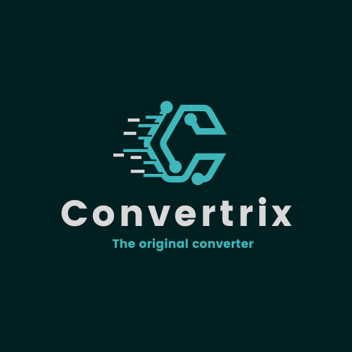

<div class="wrapper">
	<div class="feature">
		<div class="feature__item">
			<h3 class="section__title">Fast &amp; Light</h3>
			<p>Start writing your notes immediately in any terminal! No more time wasted on navigating and opening your text
				editor.</p>
		</div>
		<div class="feature__item">
			<h3 class="section__title">Convertrix v.1.0.0</h3>
			<p></p>
		</div>
		<div class="feature__item">
			<h3 class="section__title">Secure</h3>
			<p>Encrypt your notes optionally. No one can get to your secrets! </p>
		</div>
		<div class="feature__item">
			<h3 class="section__title">Configuration</h3>
			<p>Maintain all your settings in a single <span class="code code--inline">config.json</span> file. Never need to
				redo the setting every single time jotting down a note.</p>
		</div>
		<div class="feature__item">
			<h3 class="section__title">Highlightings</h3>
			<p>For better readability, scribbler has a clean, beautiful color scheme allow you to scan files fast.</p>
		</div>
		<div class="feature__item">
			<h3 class="section__title">Keybindings</h3>
			<p>You can expect common keybindings for scribbler. Customize <span class="code code--inline">bindings.json</span>
				for your own liking! </p>
		</div>
	</div>

</div>